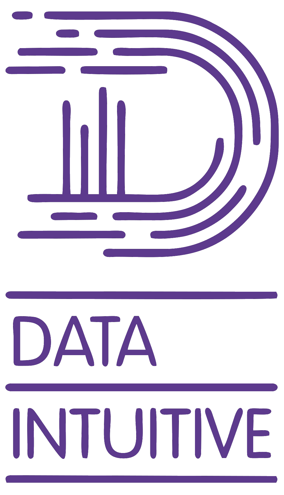

Our History

Founded in 2011, Data Intuitive is a team of computational scientists with a wealth of experience in data science and creating and optimizing bioinformatics data workflows.
We have expertise in a wide range of data types and technologies, including viral taxonomy data, omics data, gene data, and various programming languages and frameworks for data analysis and visualization. Our team is also proficient in infrastructure operations, including the design and management of data pipeline infrastructure and security.
With the development of Viash in 2019, Data Intuitive began a new chapter in its history. Founders Toni, Robrecht and Andy bring a wealth of expertise in consultancy, data science, bioinformatics, and full stack IT to the table, totaling over 50 years of experience in everything from operations to strategic projects.
Our Culture
Innovation
We cultivate an innovative culture that fosters a fast-paced and dynamic environment. This encourages our IT experts to constantly explore and challenge the boundaries of what is possible.
Co-Creation
We collaborate with companies on both short and long-term projects. Our partnership approach emphasizes driving innovation and growth through data-driven methods, rather than just supplying temporary staff.
Sustainability
We are committed to promoting sustainability in all aspects of our operations. This includes utilizing open-source software, fostering a culture of work-life balance, and implementing the use of electric cars in our transportation fleet.
Our Expertise
Our team comprises of highly skilled and experienced professionals who are experts in their respective fields. We specialize in utilizing the following technologies in our area of expertise, data workflow development, and also for all bioinformatics related projects.
Single-cell omics (scRNA-seq, multi-omics)
Workflow management (Nextflow, Snakemake, wdl)
Containerization (Docker, Podman, Singularity)
Container orchestration (Kubernetes)
Operating systems (Linux, Mac)
High performance computing (HPC) environment
Cloud computing platforms (Google Cloud, AWS, Azure)
Data wrangling (Tidyverse, pandas)
- Big Data technologies (Hadoop, Spark)
- NoSQL databases (mongoDB)
- Scripting (R, Python, Shell, C#, JavaScript, Scala)
- Interactive development environments (Jupyter, RStudio)
- CI/CD systems for DataOps (Jenkins, GitHub Actions)
- Supporting systems (GitHub, Slack)
- Documentation systems (Quarto)
- Visualization (ggplot2)


Unlocking the Power of Nextflow and Kubernetes
With our extensive experience in the data workflow field, we have developed a thorough understanding of the combination of Nextflow and Kubernetes